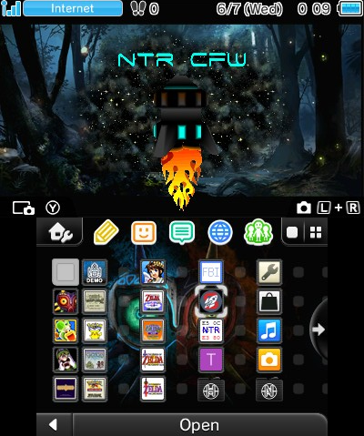
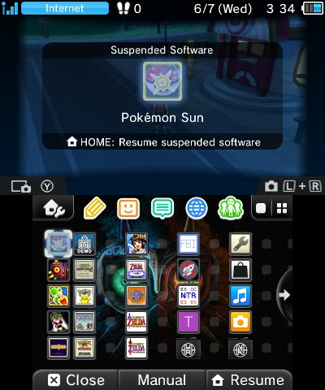
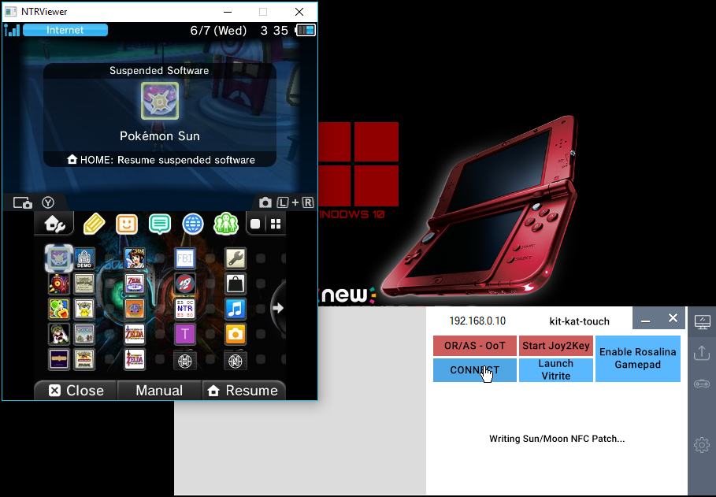
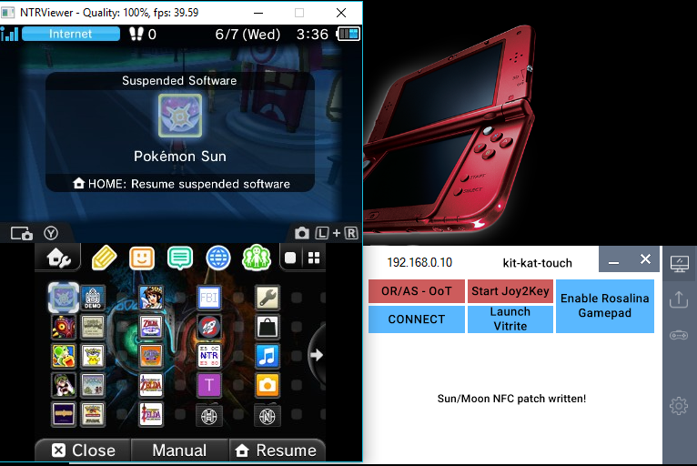

How to Stream Video from Pokemon Sun & Moon to PC - (No Gamepad)
On your 3DS

Load Pokemon Su/Mo
Load your Save File

When You See your Character on the Overworld
Press the Home Button

On Your PC
Open kit-kat-touch.exe
Click Connect
kit-kat-touch will Write a wifi Patch


Press the Home Button on your 3DS

You're Now Streaming!
Want to Learn how to Record your Gameplay or Stream Live to Twitch/Youtube?
Head to: www.nintend.news for all things GameInCanada